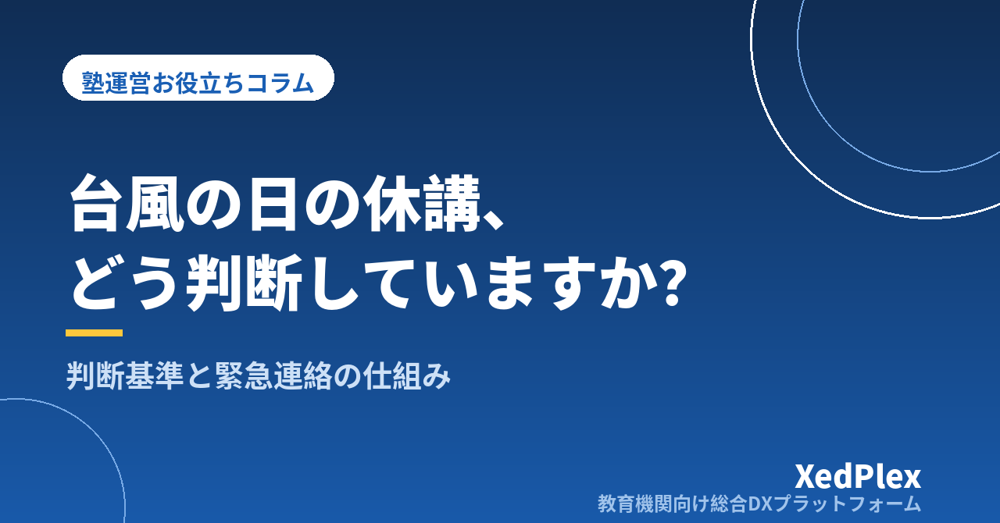

台風・災害・感染症で休講するとき、塾はどう決める？｜判断基準を先に決めておく緊急連絡の仕組み

台風が近づいている日の昼過ぎ。「今日の授業、ありますか？」と保護者から電話やLINEが次々に届く。天気予報を何度も見比べながら、休講にするか迷っているうちに夕方になり、授業開始の直前に一人ずつ連絡する──。個人塾の塾長なら、一度は経験したことがある場面ではないでしょうか。
休講の判断が難しいのは、天候や感染症の状況そのものよりも、「何を基準に、いつまでに、誰が決めるか」が決まっていないことが原因であることがほとんどです。この記事では、台風・大雨・地震・感染症などで休講するときの判断基準を前もって決めておく方法と、判断から保護者への連絡、休講後の振替までを「仕組み」にする手順を解説します。
休講の判断で塾長が迷う3つの理由
まずは、なぜ毎回迷ってしまうのかを整理しておきます。
| 理由 | よくある状態 | 起きやすいこと |
|---|---|---|
| 基準がない | そのつど天気予報やニュースを見て「なんとなく」決めている | 前回と判断が違い、保護者から「この前は休みだったのに」と言われる |
| 判断の時刻が決まっていない | ぎりぎりまで様子を見てしまう | 連絡が授業直前になり、すでに家を出た生徒がいる |
| 連絡手段がばらばら | 電話・個人LINE・メールが混在している | 連絡漏れが出る。問い合わせ対応に追われて判断が遅れる |
この3つは、どれも平常時に決めておけるものです。台風が来てから考えるのではなく、季節の変わり目や新年度の準備のタイミングで一度決めておけば、当日は「基準に照らして決めて、決まった手順で連絡する」だけになります。
判断基準は「先に・言葉で」決めておく
判断基準は、塾長の頭の中ではなく、文章にして保護者にも共有しておくのが基本です。事象ごとに、次のような形で整理しておくと迷いが減ります。
| 事象 | 判断の材料（例） | 決めておくこと |
|---|---|---|
| 台風・大雨・大雪 | 塾の所在地や生徒の居住地域に出ている気象警報、自治体の避難情報、公共交通機関の運行状況 | どの情報が出ていたら休講にするか。判断する時刻 |
| 地震 | 地域の震度、交通機関の状況、建物や周辺の安全確認 | 授業中に起きた場合の待機・引き渡しの手順 |
| 感染症の流行 | 学校の学級閉鎖・休校の状況、自治体や保健所からの情報 | 塾全体を休講にする場合と、個別に出席を控えてもらう場合の線引き |
| 停電・設備トラブルなど | 教室の状況、復旧の見込み | 連絡の手順だけでも決めておく |
地域の学校の対応を参考にする
自治体や学校の多くは、警報の発表状況と時刻を組み合わせた休校の基準を定め、保護者に周知しています。塾の生徒が通う学校の基準を確認し、それに沿った形で塾の基準を作ると、保護者にとっても分かりやすくなります。たとえば「学校が休校になった日は塾も休講」「判断時刻の時点で塾の所在地に暴風に関する警報が出ていれば休講」といった決め方です。
なお、警報の種類や名称、発表の仕組みは見直されることがあります。基準を作るときや見直すときは、気象庁や自治体の最新の情報を確認し、名称が変わっていないかも確かめてください。
ポイント：基準には「迷ったら安全側に倒す」という一文を入れておくのがおすすめです。基準に当てはまらない場合でも、生徒の通塾路の状況や時間帯によっては休講にする、あるいは保護者の判断で欠席しても欠席扱いにしない、と書いておけば、当日の判断と保護者の不安の両方が軽くなります。
感染症のときは「全体」と「個人」を分ける
感染症の場合は、塾全体を休講にする判断と、体調不良の生徒に出席を控えてもらう判断を分けて考えます。個人の出席については、学校での出席停止の扱いや医師の指示に合わせるのが一般的です。塾として独自の基準を設けるときは、自治体や保健所からの情報を確認したうえで、判断に迷う点は専門家や所轄機関に相談してください。
判断から保護者連絡までのタイムラインを決める
基準と同じくらい大切なのが、「いつ判断し、いつ連絡するか」です。たとえば夕方から授業がある塾なら、次のようなタイムラインが考えられます。
| タイミング | やること |
|---|---|
| 前日の夕方 | 台風の進路などから影響が見込まれる場合、「明日の授業は◯時に判断してお知らせします」と予告する |
| 当日の判断時刻（例：13時） | 基準に照らして休講・授業実施・時間短縮のどれかを決める |
| 判断後すぐ | 全保護者・講師へ一斉に連絡する。ホームページやSNSでも告知する |
| 連絡から1〜2時間後 | 連絡が届いていない、または確認できていない家庭へ電話などで個別にフォローする |
「◯時に判断して連絡します」と予告しておくだけで、保護者からの問い合わせは大きく減ります。判断時刻は、小学生の下校時刻や生徒が家を出る時刻から逆算して決めておきましょう。
連絡手段は1つにまとめておく
緊急時の連絡が、講師の個人LINEや電話に分かれていると、連絡漏れの原因になります。全員に同じ内容を同時に届けられる手段を1つ決め、入塾時に登録してもらっておくことが前提です。連絡手段の整理の仕方は「塾の保護者連絡、講師の個人LINE頼みは危険？」で、平常時の連絡頻度の考え方は「塾の保護者連絡、適切な頻度は？」で解説しています。
休講連絡の文例
【休講のお知らせ】
台風◯号の接近にともない、本日◯月◯日（◯）の授業はすべて休講といたします。自習室も利用できません。
振替授業の日程は、◯日（◯）までに改めてご連絡いたします。
安全を第一に、外出はお控えください。ご不明な点は本連絡への返信でお知らせください。
文面には「何が（授業・自習室）」「いつ」「振替はどうなるか」「問い合わせ先」の4点を必ず入れます。あらかじめ休講・時間短縮・授業実施の3パターンを用意しておけば、当日は日付と理由を変えるだけで送れます。
授業中に天候が急変したときの対応
判断時刻の後に急に天候が悪化したり、授業中に地震が起きたりすることもあります。こうした場面ほど、手順が決まっているかどうかで差が出ます。
- 生徒の安全確保と在室の確認：いま教室に誰がいるかをすぐに把握します。入退室の記録が残っていれば、名簿と照らし合わせるだけで確認できます（入退室管理の方法は「小さな塾でもできる入退室管理」）。
- 保護者への一斉連絡：「授業を途中で終了します」「保護者のお迎えが来るまで教室で待機します」など、塾としての方針を伝えます。
- 帰宅・引き渡しの記録：誰が、何時に、誰と帰ったかを記録します。一人で帰すか、保護者のお迎えを待つかは、学年や通塾手段ごとに事前に決めておきます。
送迎を行っている塾では、運行の中止や時間変更の判断基準も合わせて決めておきましょう。送迎時の安全管理については「塾・学童の送迎、安全管理はどう整える？」で詳しく紹介しています。
休講後の振替と月謝の扱いは規定に書いておく
休講そのものよりも、後からもめやすいのが振替と月謝の扱いです。次の点は、塾の規定に明記し、入塾時に説明しておきましょう。
- 振替の有無と期限：塾都合の休講は振替を行うのか、いつまでに実施するのか
- 振替の方法：別の日時の授業、オンライン授業、補習プリントなど、どの方法で代わりにするのか
- 月謝の扱い：振替を行う場合は月謝を変えないのか、振替ができなかった場合はどうするのか
- 保護者判断の欠席：塾は授業を実施したが、安全のため家庭の判断で休んだ場合の扱い
振替の運用ルールは「塾の欠席・振替管理のルール作りと運用」、規定の作り方は「塾の退塾・休塾のルールと手続きの整え方」も参考にしてください。返金の要否など判断に迷う点については、契約内容に照らして専門家に確認しておくと安心です。
また、休講の判断・連絡・振替の手順は、塾長が不在のときでも講師が動けるよう、業務マニュアルの「緊急時対応」として1枚にまとめておくのがおすすめです。台風が多い時期の前に見直す予定を、年間事務カレンダーに入れておくと忘れません。
まとめ：休講は「当日の判断」ではなく「事前の仕組み」で決まる
台風・災害・感染症時の休講と緊急連絡のポイントを振り返ります。
- 迷う原因は「基準がない」「判断の時刻がない」「連絡手段がばらばら」の3つ
- 事象ごとに判断の材料と基準を文章にし、地域の学校の基準も参考にする
- 前日予告→判断時刻→一斉連絡→個別フォローのタイムラインを決める
- 授業中の急変に備え、在室確認と帰宅・引き渡しの手順を決めておく
- 振替・月謝の扱いは規定に書き、入塾時に説明しておく
最初の一歩として、今日のうちに「判断時刻」と「休講連絡の文例」だけでも決めておきましょう。それだけで、次の台風の日の慌ただしさはずいぶん変わるはずです。
この記事を書いた運営より
私たちは、個人経営・小規模の学習塾向けに、生徒管理・QRコードでの入退室記録・月次請求・保護者へのLINE/メール通知・AIによる学習支援までをひとつにまとめた教育機関向け総合DXプラットフォーム「XedPlex（ゼドプレックス）」を開発・提供しています。初期費用は0円、料金は生徒1名あたり月額300円（税込）から。生徒50名の塾なら月15,000円（税込）です。全国8つの教室で導入されており、導入塾には紹介ホームページの無料作成も行っています。機能の詳細説明はこちら。
XedPlexには、保護者へのメッセージ配信や、QRコードでの入退室記録とLINE・メールでの自動通知の機能があり、休講のお知らせや「いま誰が教室にいるか」の確認をひとつの場所で行えます。
XedPlexの詳細を見る